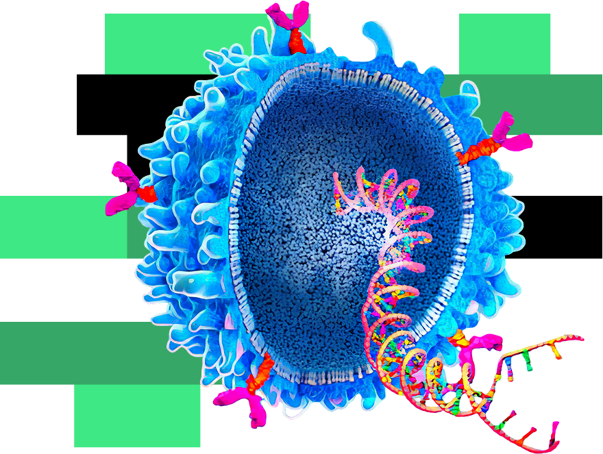
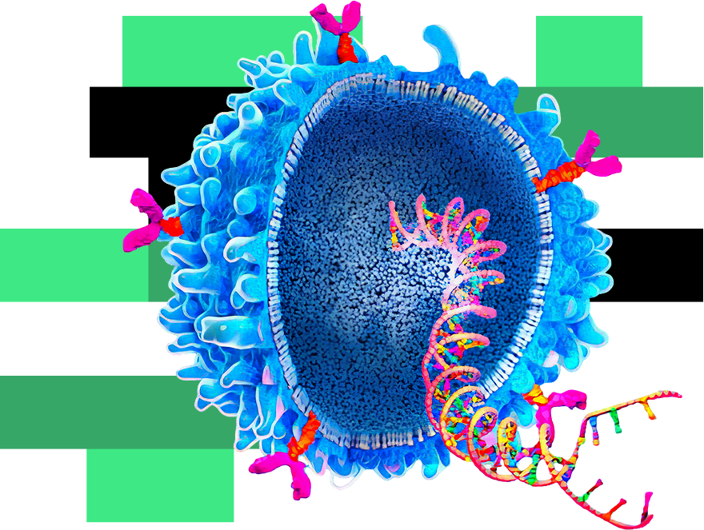
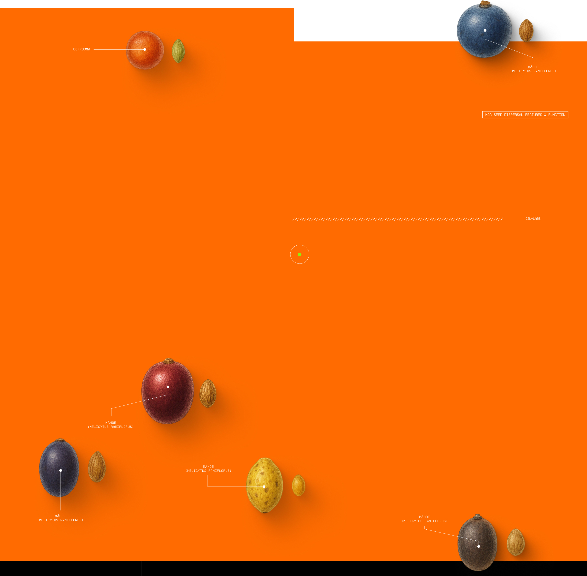
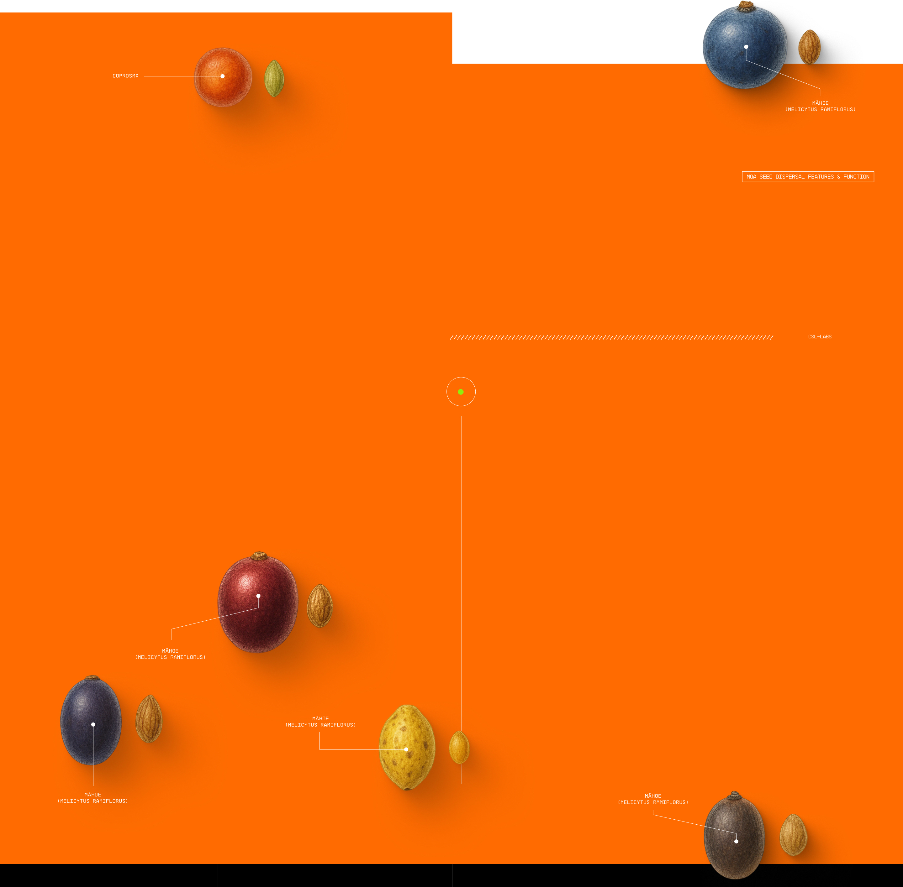

Senior Curator Natural History Paul Scofield recently helped to identify some moa bones and footprints found on a beach just south of Timaru.
The prints and bones were found by Pareora local Chris Sargent while walking his dog.
Chris contacted South Canterbury Museum director Philip Howe, who in turn contacted Paul.
Paul identified the prints as having been made by an adult Heavy-footed Moa or South Island Giant Moa.
There’s a chance they were made by the same bird whose bones were found nearby!
 
